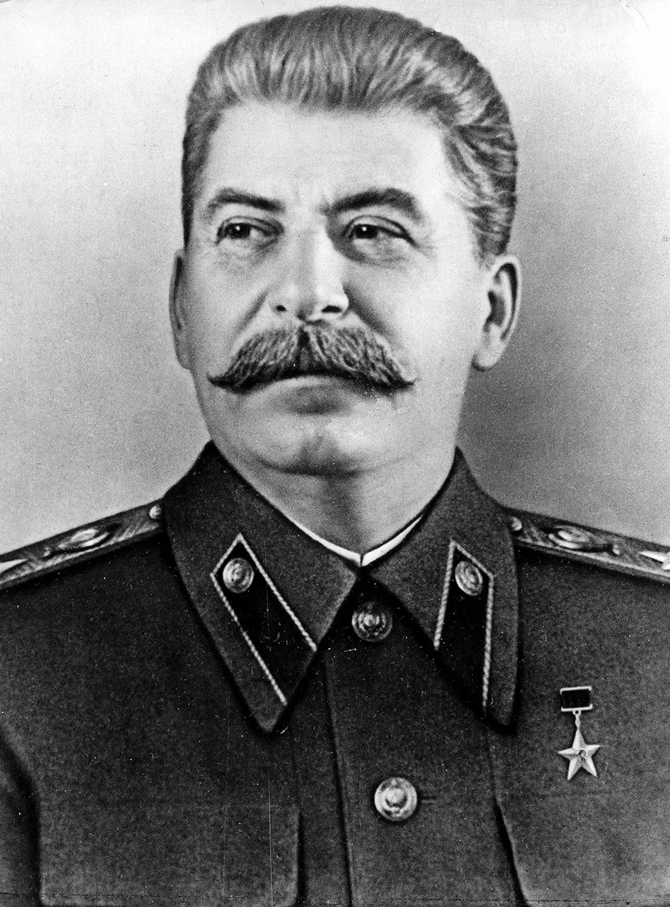
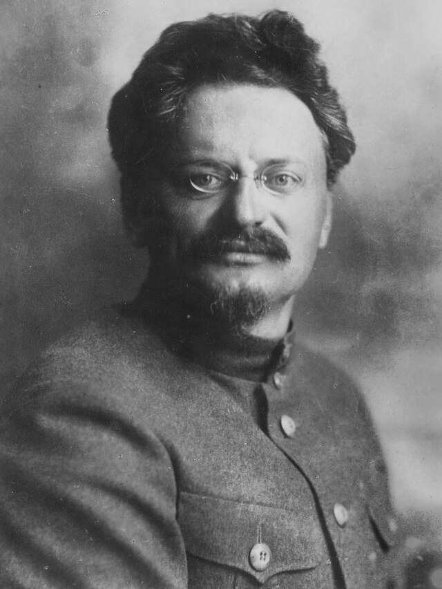
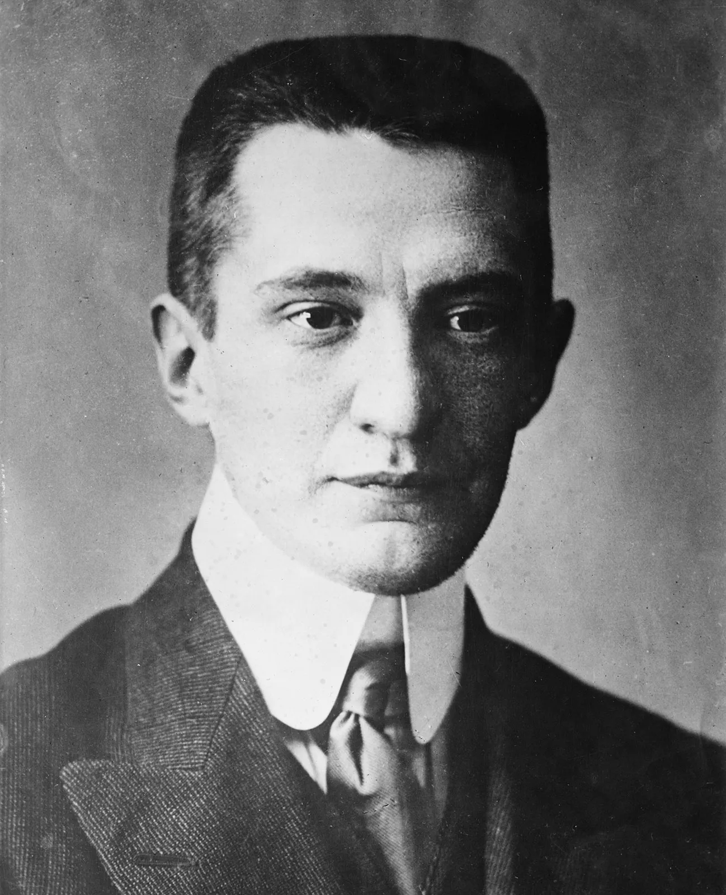

Vladimir Lenin

Vladimir Lenin, born Vladimir Ilyich Ulyanov, was the key figure in the Bolshevik Revolution and the establishment of the Soviet Union. Born in 1870, Lenin was a Russian revolutionary, politician, and political theorist who served as the leader of the Bolshevik Party and the first head of state of the Soviet Union. Lenin played a crucial role in the October Revolution, leading the Bolsheviks to power.
Josef Stalin
Josef Stalin, born Ioseb Besarionis dze Jughashvili, was the leader of the Soviet Union from the mid-1920s until his death in 1953. He was a member of the Bolshevik Party and on the party's central committee.
Leon Trotsky
Leon Trotsky, born Lev Davidovich Bronstein, was a Russian revolutionary, Marxist theorist, and Soviet politician whose particular strain of Marxist thought is known as Trotskyism. He would later be killed by an assassin in Mexico City.
Aleksandr Kerensky
Aleksandr Kerensky was a Russian revolutionary and politician who served as the second Minister-Chairman of the Russian Provisional Government in July–November 1917. He was overthrown by Lenin and his Bolshevik party of revolutionaries.
Tsar Nicholas II

Tsar Nicholas II was the last Emperor of Russia, ruling from 1 November 1894 until his forced abdication on 15 March 1917 in the February Revolution.